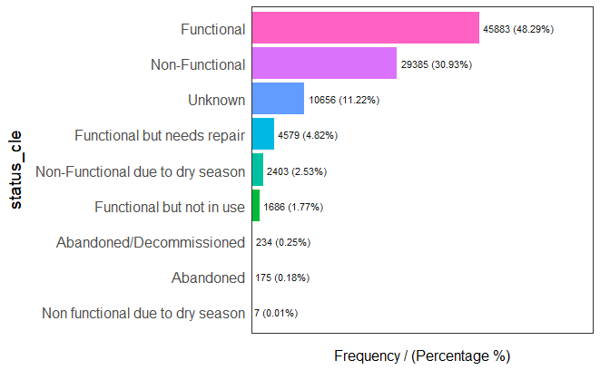
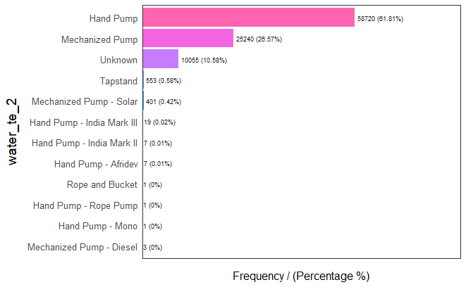
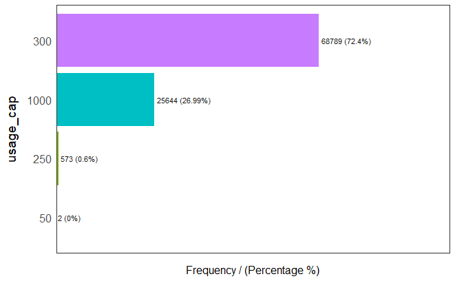
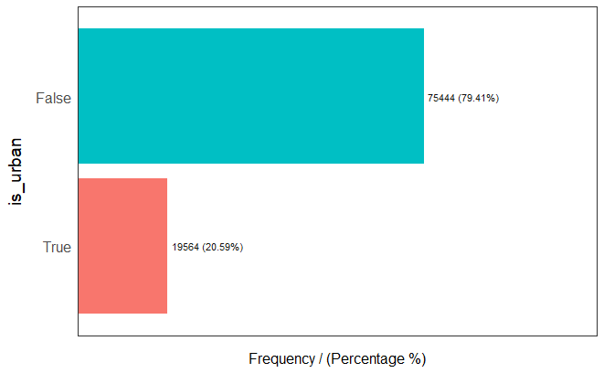
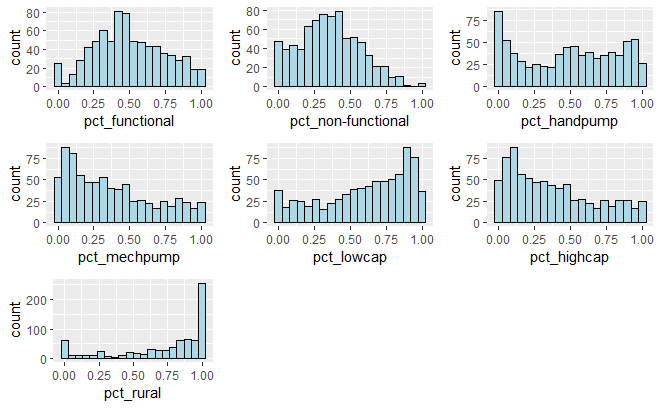
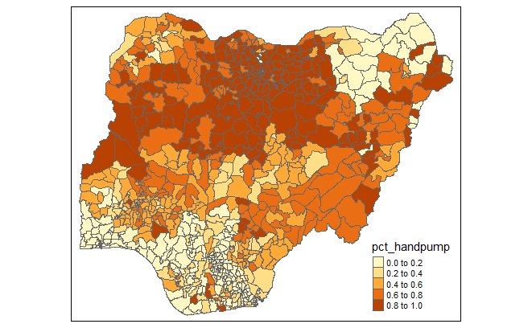
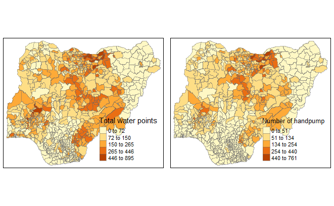
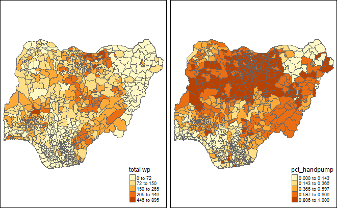
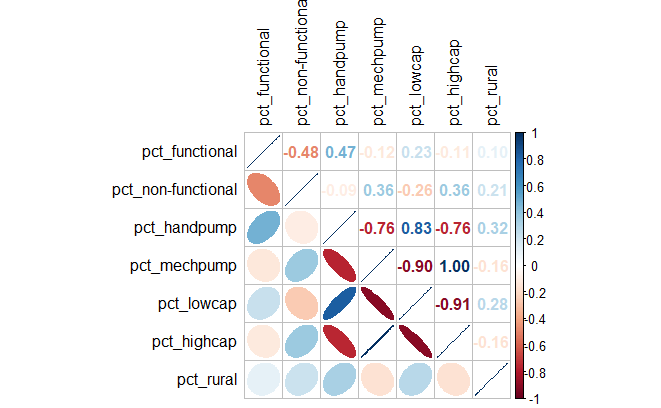

pacman::p_load(rgdal, spdep, tmap, sf, ClustGeo, funModeling,
ggpubr, cluster, factoextra, NbClust,
heatmaply, corrplot, psych, tidyverse, GGally)Take-home Exercise 2: Regionalisation of Multivariate Water Point Attributes with Non-spatially Constrained and Spatially Constrained Clustering Methods
Overview
In this take-home exercise, I will be regionalising Nigeria by using several measures. Regionalisation is to group observations which are similar in their statistical attributes and spatial location. The measures that are included in regionalisation are:
Total number of functional water points
Total number of nonfunctional water points
Percentage of functional water points
Percentage of non-functional water points
Percentage of Hand Pump water point
Percentage of Mechanized Pump water point
Percentage of usage capacity
Percentage of rural water points
The Data
Aspatial data
The aspatial data includes the water point data that can be downloaded from WPdx+ Global Data Repository. For this analysis, Shapefile data format is downloaded. The shapefile includes global water point data, the Nigeria water point data which will be used in our analysis is filtered in data importing section. The files’ names are renamed to “geo_export” for easier use.
Geospatial data
The geospatial data includes the Nigeria Level-2 Administratie Boundary (which is also known as Local Government Data LGA) polygon features GIS data which can be downloaded from geoBoundaries. In “Download geoBoundaries” section, key in “Nigeria” to Name, and download the ADM2 2020 data file. The files with name “geoBoundaries-NGA-ADM2” are used.
Getting Started
In this exercise, the following R packages will be used:
sf for importing, managing, and processing geospatial data
spdep for computing spatial weights, global and local spatial autocorrelation statistics
funModeling for Exploratory Data Analysis (EDA)
rgdal for providing bindings to the ‘Geospatial’ Data Abstraction Library (GDAL) and access to projection operation from the ‘PROJ’ library.
tidyverse for importing, wrangling, and visualizing data
tmap for plotting cartographic quality choropleth map
corrplot for providing a visual exploratory tool on correlation matrix that supports automatic variable reordering to help detect hidden patterns among variables
ggpubr for providing some easy-to-use functions for creating and customizing ggplot2
heatmaply for visualizing high-dimensional data, in which a table of numbers are encoded as a grid of colored cells
The code chunk below installs and launch the R packages into R environment.
Data Preparation
Importing geospatial data into R environment
The code chunk below uses st_read() of sf package to import Nigeria Boundary GIS data shapefile geoBoundaries-NGA-ADM2 into R and save as simple feature data frame called nga.
st_transform() of sf package is used to transform original geographic coordinate reference system (CRS) WGS84 to EPSG:26391 Minna/Nigeria West Belt, which is more appropriate for our analysis.
nga <- st_read(dsn = "data/geospatial",
layer = "geoBoundaries-NGA-ADM2") %>%
st_transform(crs = 26391)The code chunk below views the content of nga simple features data frame.
ngaThe code chunk below uses glimpse() to reveal the data type of fields.
glimpse(nga)Importing water point shapefile into R environment
The code chunk below uses st_read() of sf package to import water point data geo_export shapefile into R and save as simple feature data frame called wp.
st_transform() of sf package is used to transform original geographic coordinate reference system (CRS) WGS84 to EPSG:26391 Minna/Nigeria West Belt, which is more appropriate for our analysis.
filter() of dplyr package is used to extract water point records of Nigeria.
wp <- st_read(dsn = "data/aspatial",
layer = "geo_export") %>%
st_transform(crs = 26391) %>%
filter(clean_coun == "Nigeria")The code chunk below uses write_rds() of readr package to save the extracted sf data table wp into rds data format file called wp_nga and is saved in data folder.
wp_nga <- write_rds(wp, "data/wp_nga.rds")Data Wrangling
Recording NA values into string
The code chunk below uses replace_na() to recode:
All NA values in status_cle field into Unknown
All NA values in water_te_2 field into Unknown
mutate() of dplyr package is used to derive new variables called Unknown.
wp_nga <- read_rds("data/wp_nga.rds") %>%
mutate(status_cle = replace_na(status_cle, "Unknown")) %>%
mutate(water_te_2 = replace_na(water_te_2, "Unknown"))Check the distribution of classes in selected fields
The code chunk below uses freq() of funModeling package to display the distribution of water points status status_cle field in wp_nga.
freq(data = wp_nga,
input = 'status_cle')
According to the distribution diagram of each status, the proportion of functional water points includes Functional, Functional but not in use, and Functional but needs repair, which is 54.88% in total. The proportion of non-functional water points includes Non-Functional, Non-Functional due to dry season, Abandoned/Decommissioned, Abandoned, and Non functional due to dry season which is 33.9% in total.
The code chunk below uses freq() of funModeling package to display the distribution of water point technology water_te_2 field in wp_nga.
freq(data = wp_nga,
input = 'water_te_2')
The code chunk below uses freq() of funModeling package to display the distribution of usage capacity usage_cap field in wp_nga.
freq(data = wp_nga,
input = 'usage_cap')
The code chunk below uses freq() of funModeling package to display the distribution of urban/rural water points is_urban field in wp_nga.
freq(data = wp_nga,
input = 'is_urban')
Extracting Water Point Data
In this section, I will use filter() to extract water point records by using classes in status_cle, water_te_2, usage_cap, is_rural field.
Extracting functional water points
The code chunk below uses filter() to select functional water points from wp_nga and name as wp_functional.
wp_functional <- wp_nga %>%
filter(status_cle %in%
c("Functional",
"Functional but not in use",
"Functional but needs repair"))Extracting non-functional water points
The code chunk below uses filter() to select non-functional water points from wp_nga and name as wp_nonfunctional.
wp_nonfunctional <- wp_nga %>%
filter(status_cle %in%
c("Non-Functional",
"Non-Functional due to dry season",
"Abandoned/Decommissioned",
"Abandoned",
"Non functional due to dry season"))Extracting water points with Hand Pump
The code chunk below uses filter() to select Hand Pump water points from wp_nga and name as wp_handpump.
wp_handpump <- wp_nga %>%
filter(water_te_2 %in%
c("Hand Pump"))Extracting water points with Mechanized Pump
The code chunk below uses filter() to select Mechanized Pump water points from wp_nga and name as wp_mechpump.
wp_mechpump <- wp_nga %>%
filter(water_te_2 %in%
c("Mechanized Pump"))Extracting water points with Usage Capacity <1000
The code chunk below uses filter() to select water points with usage capacity < 1000 from wp_nga and name as wp_lowcap.
wp_lowcap <- filter(wp_nga, usage_cap != 1000)Extracting water points with Usage Capacity >=1000
The code chunk below uses filter() to select water points with usage capacity >= 1000 from wp_nga and name as wp_highcap.
wp_highcap <- filter(wp_nga, usage_cap == 1000)Extracting water points in rural area
The code chunk below uses filter() to select Hand Pump water points from wp_nga and name as wp_handpump.
wp_rural <- wp_nga %>%
filter(is_urban %in%
c("False"))Performing Point-in-Polygon Count
In this section, st_intersects() of sf package to identify the water points located in each region of Nigeria, length() of Base R is used to calculate the number of water points in each region.
mutate() of dplyr package is used to derive new variables namely total wp, wp functional, wp non-functional, wp handpump, wp lowcap, wp highcap, wp rural.
nga_wp <- nga %>%
mutate(`total wp` = lengths(st_intersects(nga, wp_nga))) %>%
mutate(`wp functional` = lengths(st_intersects(nga, wp_functional))) %>%
mutate(`wp non-functional` = lengths(st_intersects(nga, wp_nonfunctional))) %>%
mutate(`wp handpump` = lengths(st_intersects(nga, wp_handpump))) %>%
mutate(`wp mechpump` = lengths(st_intersects(nga, wp_mechpump))) %>%
mutate(`wp lowcap` = lengths(st_intersects(nga, wp_lowcap))) %>%
mutate(`wp highcap` = lengths(st_intersects(nga, wp_highcap))) %>%
mutate(`wp rural` = lengths(st_intersects(nga, wp_rural)))Saving the Analytical Data Table
The code chunk below uses mutate() to derive 2 fields namely pct_functional, pct_non-functional, pct_handpump, pct_lowcap, pct_highcap, pct_rural which are the percentage of functional water points, non-functional water points, hand pump water points, usage capacity < 1000 water points, usage capacity >= 1000 water points and rural area water points in each region.
replace_na() is used to recode all NaN values which are caused by 0 in total wp field into 0.
nga_wp <- nga_wp %>%
mutate(`pct_functional` = replace_na((`wp functional`/`total wp`),0)) %>%
mutate(`pct_non-functional` = replace_na((`wp non-functional`/`total wp`),0)) %>%
mutate(`pct_handpump` = replace_na((`wp handpump`/`total wp`),0)) %>%
mutate(`pct_mechpump` = replace_na((`wp mechpump`/`total wp`),0)) %>%
mutate(`pct_lowcap` = replace_na((`wp lowcap`/`total wp`),0)) %>%
mutate(`pct_highcap` = replace_na((`wp highcap`/`total wp`),0)) %>%
mutate(`pct_rural` = replace_na((`wp rural`/`total wp`),0))The code chunk below uses write_rds() of readr package to save the extracted sf data table nga_wp into rds data format file called wp_nga and is saved in data folder.
write_rds(nga_wp, "data/wp_nga.rds")Upon completing the above sections, we achieve an rds data format file called wp_nga which has a file size of 2.1MB. This allows us to keep a small size data file and delete raw data files which occupy space of several gigabytes. In the following section, wp_nga.rds will be used for analysis. A RMarkdown code {r eval=FALSE} is used to skip evaluating previous code chunks and exclude their results so that the wp_nga.rds file will not be modified. If need to reproduce the previous sections, please change {r eval=FALSE} to {r} then proceed to run the code chunks.
The code chunk below uses read_rds() to load rds file wp_nga for the analysis.
nga_wp <- read_rds("data/wp_nga.rds")
summary(nga_wp) shapeName Level shapeID shapeGroup
Length:774 Length:774 Length:774 Length:774
Class :character Class :character Class :character Class :character
Mode :character Mode :character Mode :character Mode :character
shapeType geometry total wp wp functional
Length:774 MULTIPOLYGON :774 Min. : 0.0 Min. : 0.00
Class :character epsg:26391 : 0 1st Qu.: 45.0 1st Qu.: 17.00
Mode :character +proj=tmer...: 0 Median : 95.5 Median : 45.00
Mean :122.7 Mean : 67.36
3rd Qu.:169.0 3rd Qu.: 88.00
Max. :895.0 Max. :754.00
wp non-functional wp handpump wp mechpump wp lowcap
Min. : 0.0 Min. : 0.00 Min. : 0.00 Min. : 0.00
1st Qu.: 13.0 1st Qu.: 6.00 1st Qu.: 10.00 1st Qu.: 16.00
Median : 34.0 Median : 47.00 Median : 24.00 Median : 59.50
Mean : 41.6 Mean : 75.84 Mean : 32.60 Mean : 89.59
3rd Qu.: 61.0 3rd Qu.:110.00 3rd Qu.: 45.75 3rd Qu.:129.00
Max. :277.0 Max. :761.00 Max. :247.00 Max. :764.00
wp highcap wp rural pct_functional pct_non-functional
Min. : 0.00 Min. : 0.00 Min. :0.0000 Min. :0.0000
1st Qu.: 11.00 1st Qu.: 23.00 1st Qu.:0.3311 1st Qu.:0.2105
Median : 25.00 Median : 64.00 Median :0.4741 Median :0.3534
Mean : 33.13 Mean : 97.45 Mean :0.4983 Mean :0.3592
3rd Qu.: 46.00 3rd Qu.:141.00 3rd Qu.:0.6712 3rd Qu.:0.5080
Max. :247.00 Max. :895.00 Max. :1.0000 Max. :1.0000
pct_handpump pct_mechpump pct_lowcap pct_highcap
Min. :0.0000 Min. :0.0000 Min. :0.0000 Min. :0.0000
1st Qu.:0.1621 1st Qu.:0.1182 1st Qu.:0.3990 1st Qu.:0.1225
Median :0.5079 Median :0.3120 Median :0.6690 Median :0.3137
Mean :0.4864 Mean :0.3704 Mean :0.6078 Mean :0.3754
3rd Qu.:0.7778 3rd Qu.:0.5708 3rd Qu.:0.8718 3rd Qu.:0.5787
Max. :1.0000 Max. :1.0000 Max. :1.0000 Max. :1.0000
pct_rural
Min. :0.0000
1st Qu.:0.5727
Median :0.8646
Mean :0.7271
3rd Qu.:1.0000
Max. :1.0000 Exploratory Data Analysis (EDA)
EDA using statistical graphics
The code chunk below plots multiple histograms to reveal the distribution of newly created variables.
ggarange() of ggpubr package is used to group the histograms together.
functional <- ggplot(data=nga_wp,
aes(x= `pct_functional`)) +
geom_histogram(bins=20,
color="black",
fill="light blue")
nonfunctional <- ggplot(data=nga_wp,
aes(x= `pct_non-functional`)) +
geom_histogram(bins=20,
color="black",
fill="light blue")
handpump <- ggplot(data=nga_wp,
aes(x= `pct_handpump`)) +
geom_histogram(bins=20,
color="black",
fill="light blue")
mechpump <- ggplot(data=nga_wp,
aes(x= `pct_mechpump`)) +
geom_histogram(bins=20,
color="black",
fill="light blue")
lowcap <- ggplot(data=nga_wp,
aes(x= `pct_lowcap`)) +
geom_histogram(bins=20,
color="black",
fill="light blue")
highcap <- ggplot(data=nga_wp,
aes(x= `pct_highcap`)) +
geom_histogram(bins=20,
color="black",
fill="light blue")
rural <- ggplot(data=nga_wp,
aes(x= `pct_rural`)) +
geom_histogram(bins=20,
color="black",
fill="light blue")
ggarrange(functional, nonfunctional, handpump, mechpump, lowcap, highcap, rural,
ncol = 3,
nrow = 3)
Preparing a choropleth map
The code chunk below uses qtm() of tmap package to plot a choropleth map showing the distribution of percentage of functional water points of Nigeria ar LGA level.
qtm(nga_wp, "pct_handpump")
The code chunk below plots two choropleth maps, one for the total number of water points and one for the total number of water points with handpump.
TT_WATERPOINTS.map <- tm_shape(nga_wp) +
tm_fill(col = "total wp",
n = 5,
style = "jenks",
title = "Total water points") +
tm_borders(alpha = 0.5)
HANDPUMP.map <- tm_shape(nga_wp) +
tm_fill(col = "wp handpump",
n = 5,
style = "jenks",
title = "Number of handpump ") +
tm_borders(alpha = 0.5)
tmap_arrange(TT_WATERPOINTS.map, HANDPUMP.map,
asp=NA, ncol=2)
The choropleth maps above show that regions with relatively more water points are having relatively more handpumps.
The code chunk below plots the choropleth maps showing the dsitribution of total number of water points and percentage of handpump.
tm_shape(nga_wp) +
tm_polygons(c("total wp", "pct_handpump"),
style="jenks") +
tm_facets(sync = TRUE, ncol = 2) +
tm_legend(legend.position = c("right", "bottom"))+
tm_layout(outer.margins=0, asp=0)
Comparing the choropleth map of number of handpump and percentage of handpump, we can tell that hand pump is the major technology used in most regions, regardless of having more or less water points.
Correlation Analysis
The code chunk below uses corrplot.mixed()of corrplot package to visualise and analyse the correlation of the input variables.
cluster_vars <- nga_wp %>%
st_set_geometry(NULL)
cluster_vars.cor = cor(cluster_vars[,14:20])
corrplot.mixed(cluster_vars.cor,
lower = "ellipse",
upper = "number",
tl.pos = "lt",
diag = "l",
tl.col = "black")
The correlation plot above shows that pct_handpump and pct_lowcap are highly correlated (coefficient between 0.7 and 0.9). This suggests that only one of them should be used in the cluster analysis instead of both. In further analysis, I will keep pct_handpump.